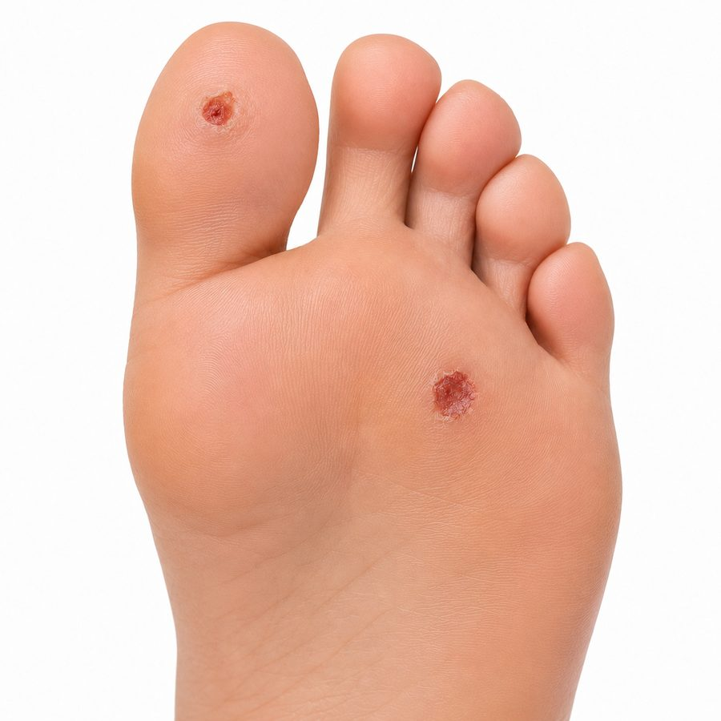
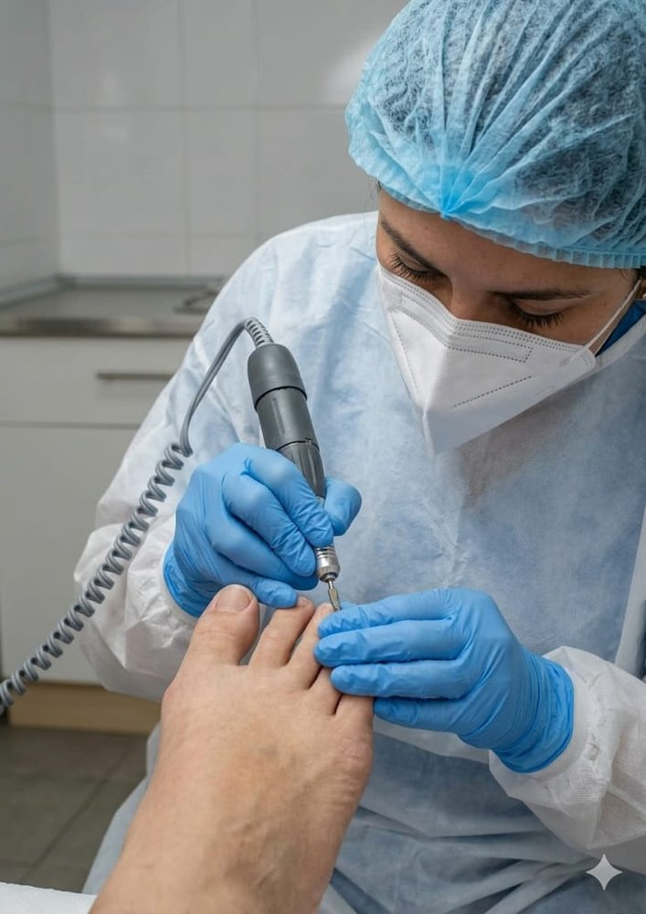
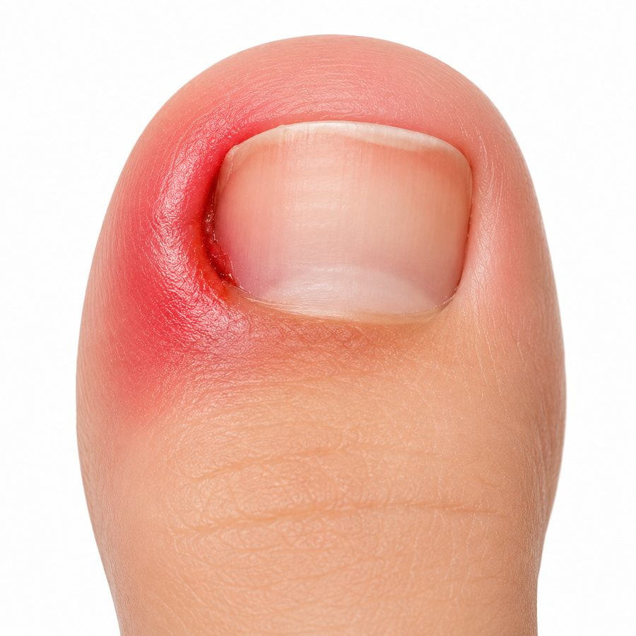
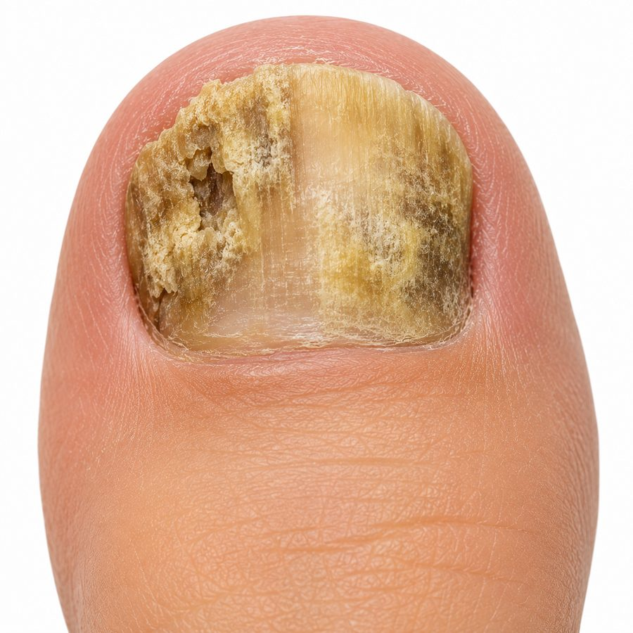
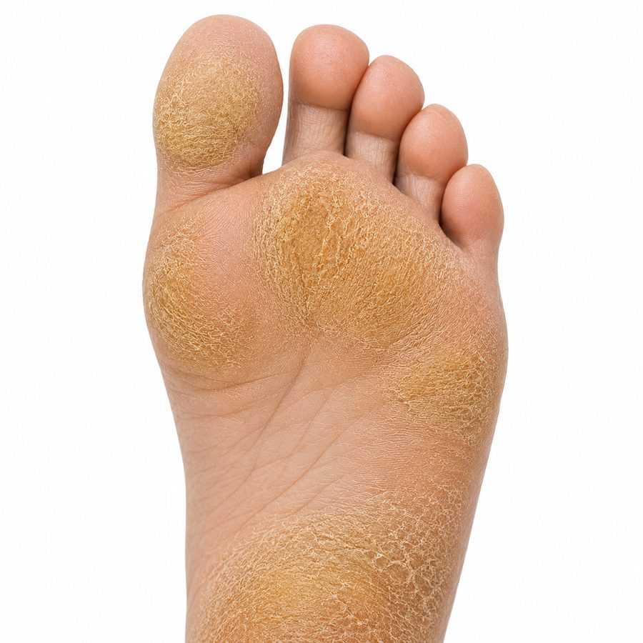
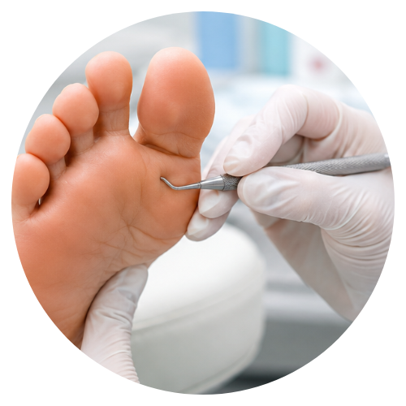

Pie diabético
Evaluación y cuidado preventivo del pie en personas con diabetes, orientado a reducir el riesgo de heridas y complicaciones.
Providencia · A pasos de Metro Los Leones
Podología Clínica Torres ofrece evaluación, prevención y tratamiento podológico cercano y seguro, dirigido por la Podóloga Clínica Fabiola Torres.

Podóloga a cargo de Podología Clínica Torres.
Sobre Nosotros
Cada consulta parte por escuchar cómo caminas por la vida.
Dirigida por la Podóloga Clínica Fabiola Torres, Podología Clínica Torres se dedica a la prevención, evaluación y tratamiento de afecciones podológicas: pie diabético, uña encarnada (onicocriptosis), hongos en las uñas (onicomicosis), callosidades (hiperqueratosis) y reflexología podal.
Un espacio pensado para que cada paciente reciba un diagnóstico claro y un plan de tratamiento adaptado a sus necesidades, en un ambiente cálido y profesional.
Tratamientos
Evaluación y tratamiento de las afecciones podológicas más frecuentes, con un enfoque preventivo y personalizado.

Evaluación y cuidado preventivo del pie en personas con diabetes, orientado a reducir el riesgo de heridas y complicaciones.

Tratamiento de uñas encarnadas para aliviar el dolor, corregir el crecimiento de la uña y prevenir infecciones.

Diagnóstico y tratamiento de hongos en las uñas, con seguimiento del proceso hasta recuperar uñas más sanas.

Remoción profesional de callosidades y durezas plantares que generan dolor o molestia al caminar.
Terapia de masaje y presión en puntos específicos del pie, orientada a la relajación y el bienestar general.

Evaluación completa de la salud de tus pies, con cuidado y mantención periódica para prevenir molestias futuras.
Antes y después
Registro fotográfico de tratamientos realizados en Podología Clínica Torres, con autorización de cada paciente.
Fotografías de pacientes reales, publicadas con su autorización. Los resultados y el tiempo de tratamiento pueden variar según cada caso.
Cómo llegar
Atendemos en el Centro Comercial Dos Providencia, a pasos del Metro Los Leones.
Av. Providencia 2237, Local C4
Centro Comercial Dos Providencia
+56 9 7915 9787
Agenda tu hora en línea y elige el horario disponible que más te acomode.
Agenda tu hora online en pocos minutos.
Agendar hora ahora